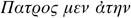
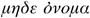
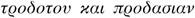
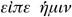

’ [‘Speak.’]
’ [‘Speak.’]Hardly had the count’s horses rounded the corner of the boulevard than Albert turned to him and burst out into a peal of laughter, a little too loud not to be slightly forced.
‘Well, now,’ he said, ‘I might ask you, as King Charles IX asked Catherine de’ Medici after the Saint Bartholomew’s Day massacre: “How do you think I played my little part?” ’
‘In what connection?’ asked Monte Cristo.
‘Why, in connection with setting up my rival with Monsieur Danglars…’
‘What rival?’
‘What rival! Your protégé, Monsieur Andrea Cavalcanti, of course!’
‘You must be joking, Viscount. I do not in any way protect Monsieur Andrea, at least not where Monsieur Danglars is concerned.’
‘That’s a criticism I should make of you, should the young man need protection; but, luckily for me, he doesn’t.’
‘Why? Do you think he’s courting?’
‘I guarantee it. He rolls his eyes and groans like a lover. He aspires to the hand of the proud Eugénie. Huh! That’s a perfect anapaestic line! I promise you, it was unintentional. No matter, I’ll repeat it: he aspires to the hand of the proud Eugénie.’
‘What matter, since you are the only suitor under consideration?’
‘Don’t say that, my dear Count. I’m spurned from both sides.’
‘How do you mean: from both sides.’
‘Of course! Mademoiselle Eugénie hardly spoke to me and her confidante, Mademoiselle d’Armilly, not at all.’
‘Yes, but the father adores you,’ said Monte Cristo.
‘Really? On the contrary, he thrust a thousand daggers into my heart; admittedly they were stage daggers, with disappearing blades, but he thought they were real enough.’
‘Jealousy implies affection.’
‘Yes, but I am not jealous.’
‘However, he is.’
‘Of whom? Of Debray?’
‘Me? I guarantee that in a week he will have barred his door to me.’
‘You are wrong, Viscount.’
‘Prove it.’
‘Do you want me to?’
‘Yes.’
‘I have been asked to request Monsieur de Morcerf to make some definite proposal to the baron.’
‘Who asked you?’
‘The baron himself.’
‘Oh, now,’ Albert said, in the most wheedling tone he could summon. ‘You wouldn’t do that, would you, my dear Count?’
‘That’s where you’re wrong, Albert. I have promised and I shall do it.’
‘Well, then,’ Albert said with a sigh, ‘it appears you are determined to see me married.’
‘I am determined to stay on the right side of everyone. But, speaking of Debray, I haven’t seen him recently at the baron’s.’
‘There has been a disagreement.’
‘With Madame?’
‘With Monsieur.’
‘Did he notice something going on?’
‘Huh! That’s a good one!’
‘Do you really think he suspected?’ Monte Cristo asked, with charming innocence.
‘Did he, indeed. Where do you come from, my dear Count?’
‘The Congo, if you wish.’
‘Still not far enough.’
‘What do I know about your Parisian husbands?’
‘Husbands, my dear Count, are the same everywhere. Once you have seen one specimen in a given country, you know the whole breed.’
‘So what can have come between Danglars and Debray? They seemed to get on so well,’ Monte Cristo said, still feigning innocence.
‘Now, there we are talking about one of the mysteries of Isis, and I am not an initiate. When the young Cavalcanti is part of the family, you can ask him that.’
The carriage halted.
‘Here we are,’ said Monte Cristo. ‘It is only half-past ten, why don’t you come up?’
‘I should like to.’
‘My carriage can take you home.’
‘Thank you, but I think my coupé will have followed us.’
‘Yes, here it is,’ said Monte Cristo, jumping down. Both men entered the house where the drawing-room was already lit.
‘Make us some tea, Baptistin,’ Monte Cristo said.
Baptistin went out without a sound. Two seconds later, he reappeared with a plate ready laid which, like a meal in one of those magical entertainments, seemed to have risen out of the ground.
‘I must admit, my dear Count,’ Morcerf said, ‘that what I admire in you is not your wealth, because there may be people richer than you are; it is not your wit, because although Beaumarchais’ was not greater, it was as great; but it is your way of obtaining service, without any answering back, to the minute, no, to the second, as if your people had guessed from the manner of your ring, just what you wanted, and as if what you wanted was always ready waiting.’
‘There is some truth in what you say. They know my habits. For example: isn’t there something you would like to do while you are drinking your tea?’
‘Why, yes: I should like to smoke.’
Monte Cristo went over to the bell-push and sounded it once. A second later, a concealed door opened and Ali appeared with two chibouks, already filled with excellent Latakia.
‘Extraordinary!’
‘No, no: elementary, my dear Morcerf,’ said Monte Cristo. ‘Ali knows that, when I take tea or coffee, I usually smoke. He knows that I have called for tea and that I came back with you. He hears me ring for him, guesses the reason and, since he is a native of a country where hospitality is expressed chiefly around the pipe, he brings two chibouks, instead of one.’
‘Agreed, that is as good an explanation as any other, but the fact remains that only you… Ah! What’s that I hear?’ And Morcerf bent his head towards the door, through which wafted sounds which were similar to those of a guitar.
‘There, my dear Viscount: you are condemned to have music this evening. No sooner have you escaped from Mademoiselle Danglars’ piano than you are entrapped by Haydée’s guzla.’
‘Haydée! What a delightful name! Are there really women called Haydée outside the poems of Lord Byron?’1
‘Indeed there are. Haydée may be a rare name in France, but it is common enough in Albania and Epirus. It is as though you were to say: chastity, modesty or innocence. It is a kind of baptismal name, as you Parisians call them.’
‘That’s utterly charming!’ said Albert. ‘How I should love to see our Frenchwomen called Mademoiselle Silence, Miss Goodness, or Miss Christian Charity! Just suppose that Mademoiselle Danglars, instead of being called Claire-Marie-Eugénie, as she is, was named Miss Chastity-Modesty-Innocence Danglars, dammit… Think how that would sound when they published the banns!’
‘Idiot!’ the count said. ‘Don’t joke so loudly; Haydée might hear you.’
‘Would it upset her?’
‘Not at all,’ the count replied haughtily.
‘Good-natured, is she?’ Albert asked.
‘It’s nothing to do with goodness, but with duty. A slave does not get upset with her master.’
‘Come, come! Don’t joke yourself. Are there still slaves?’
‘Of course, since Haydée is mine.’
‘I must say, you do nothing and possess nothing as other people do. Slave to Monsieur le Comte de Monte Cristo – that’s a rank in France! The way you shift gold, it must be worth a hundred thousand écus a year.’
‘A hundred thousand écus! The poor girl used to own more than that: she came into the world with a fortune beside which those in the Thousand and One Nights are a trifle.’
‘She must be truly a princess, then?’
‘As you say – and, moreover, one of the greatest in her country.’
‘I thought as much; but how did a great princess become a slave?’
‘How did Denys the Tyrant2 become a schoolmaster? The fortunes of war, my dear Viscount, and the whims of fate.’
‘Is her name a secret?’
‘For everyone else, it is, but for you, dear Viscount, since you are a friend and know how to keep quiet, don’t you, if I ask you not to tell anyone… ?’
‘On my honour!’
‘Do you know the story of the pasha of Janina?’
‘Ali Tebelin?3 Certainly, since it was in his service that my father made his fortune.’
‘Of course it was; I had forgotten.’
‘So what is Haydée to Ali Tebelin?’
‘Quite simply his daughter.’
‘What! The daughter of Ali Pasha?’
‘And the beautiful Vasiliki.’
‘And now she is your slave?’
‘She most certainly is.’
‘How did it happen?’
‘Why! One day when I was strolling through the market in Constantinople, I bought her.’
‘Magnificent! One does not live with you, dear Count, one dreams! Now, listen… But I am going to be very presumptuous…’
‘Tell me anyway.’
‘Since you go out with her and take her to the opera…’
‘What then?’
‘Could I be bold enough as to ask this of you?’
‘Be bold enough to ask me whatever you wish.’
‘Well, then, Count: will you introduce me to your princess?’
‘Certainly, on two conditions.’
‘I accept without hearing them.’
‘The first is that you never tell anyone that you have met her.’
‘Very well.’ Morcerf held out his hand. ‘I swear.’
‘The second is that you will not tell her that your father served hers.’
‘I swear that, too.’
‘Excellent, Viscount; you will remember these two oaths, won’t you?’
‘Please!’ said Albert.
‘Very well. I know you are a man of honour.’
The count rang the bell again and Ali reappeared. ‘Tell Haydée,’ the count said, ‘that I shall be taking coffee in her room and inform her that I should like her to permit me to introduce her to one of my friends.’
Ali bowed and went out.
‘Are we agreed then, Viscount? No direct questions. If you wish to know something, ask me and I shall ask her.’
‘That’s agreed.’
Ali reappeared for a third time and kept the door open to indicate to his master and Albert that they could go through.
‘Come in,’ said Monte Cristo. Albert ran a hand through his hair and curled his moustache, while the count took his hat, put on his gloves and preceded his guest into the apartment that was guarded by Ali like an advance sentry, and protected by the three French maids, under Myrto.
Haydée was waiting in the first room, the drawing-room, her eyes wide with astonishment: this was the first time that any man other than Monte Cristo had come into her quarters. She was seated on a sofa, in a corner of the room, her legs crossed under her, having built as it were a nest for herself in the richest striped and embroidered materials of the East. Near her was the instrument, the sound of which had betrayed her presence. It was a delightful picture.4
When she saw Monte Cristo, she raised herself up with a smile that was at once that of a daughter and a lover, unique to herself. Monte Cristo went over and offered his hand, to which as usual she pressed her lips. Albert had stayed by the door, enraptured by this strange beauty, impossible to imagine in France, which he was seeing for the first time.
‘Whom have you brought me?’ the young woman asked Monte Cristo in Romaic. ‘A brother, a friend, a mere acquaintance or an enemy?’
‘A friend,’ Monte Cristo replied, in the same language.
‘Called?’
‘Count Albert. He is the one I rescued from the bandits in Rome.’
‘In what language would you like me to address him?’
Monte Cristo turned to Albert. ‘Do you know modern Greek?’ he asked.
‘Alas, no!’ said Albert. ‘Not even ancient Greek, my dear Count. Never have Homer and Plato had such a poor – I might even say such a disdainful student as I was.’
‘In that case,’ Haydée said, showing that she had understood Monte Cristo’s question and Albert’s reply, ‘I shall speak French or Italian – if my master wishes me to speak, of course.’
Monte Cristo thought for a moment. ‘Speak Italian,’ he said. Then, turning to Albert: ‘It’s a pity you don’t understand either modern or ancient Greek, both of which Haydée speaks exceptionally well. The poor child will have to talk to you in Italian, and this may give you a wrong idea of her.’ And he motioned to Haydée.
‘Welcome, friend, since you come with my lord and master,’ the young woman said, in excellent Tuscan, with that gentle Roman accent that gives the language of Dante a richer sound than that of Homer. ‘Ali, bring us coffee and pipes.’ She gestured to Albert to come over, while Ali left to carry out his young mistress’s orders.
Monte Cristo showed Albert two folding stools, and each of them went to take one and draw it up to a kind of pedestal table, with a hookah as its centrepiece, surrounded by natural flowers, drawings and albums of music.
Ali returned, bringing the coffee and the chibouks. As for M. Baptistin, this part of the house was off limits to him. Albert declined the pipe that the Nubian offered him.
‘Take it, do,’ said Monte Cristo. ‘Haydée is almost as civilized as a Parisian woman. She dislikes havana tobacco, because she is not fond of foul odours, but Oriental tobacco, as you know, is a perfume.’
Ali went out. The cups of coffee were standing ready with, for Albert, a bowl of sugar. Monte Cristo and Haydée took their mocha in the Arabic manner, that is, unsweetened.
Haydée reached out and took the Japanese porcelain cup in the tips of her long, pink fingers, raising it to her lips with the innocent pleasure of a child drinking or eating something that she likes. At the same time two women came in carrying more trays, laden with ices and sorbets, which they set down on two small tables waiting there especially for that purpose.
‘My dear host,’ said Albert in Italian, ‘and you, Signora, forgive my astonishment. I am naturally amazed: here in the heart of Paris I find the Orient, the true Orient, not unfortunately as I have experienced it, but as I have dreamed it; and only a moment ago I could hear the sound of a passing omnibus and the lemonade-sellers ringing their bells. Oh, Signora! If only I could understand Greek; your conversation, in these enchanted surroundings, would make this an evening that I would always remember.’
‘I speak Italian well enough to converse with you, Monsieur,’ Haydée said calmly. ‘I shall do my best, if you like the East, to help you discover it here.’
‘What can I talk about?’ Albert whispered to Monte Cristo.
‘Whatever you wish: about her country, her childhood, her memories. Then, if you prefer, about Rome, Naples or Florence.’
‘Oh, no,’ Albert said. ‘There is no point in meeting a Greek if one is merely going to talk to her about all the things one would discuss with a Parisienne. Let me ask her about the East.’
‘Go on, then, my dear Albert. She likes nothing better than to talk of that.’
Albert turned to Haydée. ‘At what age did the signora leave Greece?’ he asked.
‘At the age of five,’ Haydée replied.
‘And do you recollect your homeland?’ Albert asked.
‘When I close my eyes, I can again see everything that I used to see. There are two ways of seeing: with the body and with the soul. The body’s sight can sometimes forget, but the soul remembers for ever.’
‘What is your earliest memory?’
‘I could hardly walk. My mother, who is called Vasiliki – in Greek, Vasiliki means “royal”,’ the young woman added, tossing back her head, ‘… my mother took my hand and, both covered in a veil, after putting all the gold we had into the bottom of a purse, we went to beg for alms for prisoners, saying: “He that hath pity upon the poor, lendeth unto the Lord”.5 Then, when the purse was full, we went back to the palace and, saying nothing to my father, we sent all the money that people had given us, thinking we were poor women, to the hegumenos6 of the monastery, who divided it among the prisoners.’
‘How old were you at that time?’
‘Three,’ said Haydée.
‘So you can remember everything that happened around you since the time when you were three?’
‘Everything.’
‘Count,’ Morcerf whispered to Monte Cristo, ‘please allow the signora to tell us something about her history. You forbade me to talk to her about my father, but perhaps she would say something about him, and you cannot imagine how happy I should be to hear his name on such lovely lips.’
Monte Cristo turned to Haydée and, furrowing his brow in a way that warned her to pay the closest attention to what he was about to tell her, said in Greek: ‘, , .’ [Literally: ‘Tell us your father’s fate, but not the traitor’s name or his treachery.’]
Haydée gave a deep sigh and a dark cloud passed across her pure brow.
‘What did you tell her?’ Morcerf asked, under his breath.
‘I repeated that you are a friend and that she has no cause to hide anything from you.’
‘So,’ Albert went on, ‘this distant pilgrimage on behalf of the prisoners was your first memory. What is the next?’
‘The next? I see myself in the shade of some sycamore-trees, near a lake whose shimmering reflection I still glimpse between the branches. My father was sitting on cushions against the oldest and most leafy of them, and my mother lying at his feet, while I, a weak child, am playing with the white beard that falls upon his chest and the cangiar7 with the diamond hilt that hung in his belt. Then, from time to time, an Albanian would come to him and say a few words, which I ignored; and he would reply, without any alteration in his voice, either “Kill!” or “Spare”.’
‘It’s strange,’ Albert said, ‘to hear such things from the lips of a young woman, other than in the theatre, and to tell oneself: “This is not an invention.” With such a poetic horizon, such a wondrous past, how do you find France?’
‘I think that it’s a beautiful country,’ Haydée said. ‘But I see France as it is, because I see it with the eyes of a grown woman, while I have only ever seen my own country with the eyes of a child, so that it seems to me always enwrapped in a mist that is either luminous or dark, depending on whether my eyes perceive it as a sweet homeland or a place of bitter suffering.’
‘How can someone as young as you, Signora, have known suffering?’ Albert asked, succumbing despite himself to the force of banality.
Haydée turned to Monte Cristo who, with a barely perceptible gesture, murmured: ‘’ [‘Speak.’]
‘More than anything else, it is one’s first memories that furnish the depths of the soul and, apart from the two that I have just told you, all my childhood memories are sad.’
‘I beg you to continue, Signora,’ said Albert. ‘I assure you that I am quite enchanted to listen to you.’
Haydée smiled sadly. ‘Would you like me to recall my other memories?’ she said.
‘I was four years old when, one evening, I was woken by my mother. We were in the palace at Janina. She lifted me off the cushions where I was lying and, when I opened my eyes, I saw that hers were full of large tears.
‘She took me away, saying nothing. But when I saw her cry, I started to do the same. “Silence, child!” she said.
‘Often, capricious like all children, I would carry on crying despite my mother’s consolation or her threats; but this time there was such a note of terror in her voice that I instantly fell silent.
‘She hurried away with me. I saw that we were going down a wide staircase. In front of us, all my mother’s maidservants were going or, rather, rushing down the same staircase, carrying boxes, bags, ornaments, jewels and purses of gold. Behind them came a guard of twenty men, armed with long rifles and pistols, dressed in a costume that has become familiar to you in France since Greece regained its nationhood.
‘I assure you,’ Haydée said, shaking her head and paling at the mere memory, ‘there was something sinister in this long procession of slaves and women half drugged with sleep – or so I thought at least, perhaps believing that others were sleeping because I was only partly awake myself. Gigantic shapes hurried down the stairway, their shadows cast on the ceiling by pine torches.
‘ “Hurry!” cried a voice at the end of the gallery. At the sound, every head was bent, as the wind blowing over the plains bends a field of corn. But I shuddered to hear it, because it was the voice of my father. He was walking behind us all, dressed in his finest attire, holding a carbine that your emperor gave him; and, his free hand resting on his favourite, Selim, he drove us before him like a shepherd with a frightened flock.
‘My father,’ Haydée said, looking up, ‘was an illustrious man, known in Europe as Ali Tebelin, Pasha of Janina, who made the Turks tremble before him.’
Without knowing why, Albert shuddered on hearing these words spoken in tones of such pride and dignity. It seemed to him that something dark and fearful shone from the young woman’s eyes when, like a pythoness8 calling up a ghost, she re-awoke the memory of this bloodstained figure whose awful death made him loom gigantic in the eyes of modern Europe.
‘Shortly afterwards,’ Haydée continued, ‘the procession halted. We were at the foot of the steps on the edge of a lake. My mother pressed me to her beating breast and, two paces behind us, I saw my father who was casting anxious glances to all sides.
‘In front of us were four marble steps, with a boat bobbing at the last of them. From where we were we could see a black shape in the middle of the lake: this was the pavilion for which we were heading. Perhaps because of the darkness, it seemed a long way away to me.
‘We stepped down into the boat. I remember that the oars made no noise as they touched the water. I looked over the side at them: they were wrapped in the belts of our Palicares.9 In the boat, apart from the oarsmen, there were only some women, my father, my mother, Selim and I. The Palicares had stayed at the edge of the lake, kneeling on the bottom step and using the other three as a rampart, in case they had been followed. Our boat was flying like the wind.
‘ “Why is the boat going so fast?” I asked my mother.
‘ “Hush, child!” she said. “We are fleeing.”
‘I could not understand. Why was my father fleeing – my father, the all-powerful, before whom others normally would flee, my father whose motto was: “They hate me, and that is why they fear me”? Yet he was indeed fleeing across the lake. He has since told me that the garrison of the castle at Janina, tired of long service…’
Here Haydée turned meaningfully towards Monte Cristo, whose eyes did not leave hers. Consequently, she continued slowly, like someone inventing or disguising the details of the story.
‘You were saying, Signora,’ Albert said, paying close attention to her account, ‘that the garrison at Janina, tired of long service…’
‘Had negotiated with the seraskier Kurchid,10 who was sent by the sultan to kidnap my father. At this, my father decided to retire into a hiding-place that he had long kept prepared for himself (called kataphygion, which means “refuge”), after sending the sultan a Frankish officer, in whom he trusted utterly.’
‘Do you remember the name of this officer, Signora?’ Albert asked.
Unseen by Morcerf, Monte Cristo exchanged a look with the young woman.
‘No,’ she said. ‘I cannot remember it but I may do so later, and then I shall tell you.’
Albert was about to mention his father’s name when Monte Cristo quietly raised his finger to call for his silence. The young man remembered his vow and said nothing.
‘We were rowing towards this pavilion. It had a ground floor with arabesque ornamentation, and a first floor overlooking the lake. As far as could be seen, that was all. But beneath the ground floor was an underground passage extending beneath the island – a vast cavern into which I, my mother and her women were led. Here, piled into a single heap, were sixty thousand purses and two hundred barrels. In the purses were twenty-five million in gold coin and in the barrels thirty thousand pounds of powder.
‘Selim, the favourite of my father’s whom I mentioned, was standing by the barrels. He would watch day and night, holding a stave at the end of which was a burning wick. He had orders to blow everything up – the pavilion, the guards, the pasha, the women and the gold – at the slightest sign from my father. I remember that our slaves, knowing they were in such fearful company, spent their days and nights in praying, weeping and moaning. As for myself, I can still see the young soldier with his pale skin and black eyes. When the angel of death comes down to take me, I am certain I shall recognize Selim.
‘I cannot say how long we remained thus. In those days I did not know what time was. At intervals, though rarely, my father had us brought up to the terrace of the palace. These were moments of delight for me, since there was nothing to look at underground except the groaning figures in the darkness and Selim’s burning stave. Sitting in front of a large opening, my father would look grimly towards the depths of the horizon, studying every black dot that appeared on the lake, while my mother, half sitting, half lying beside him, rested her head on his shoulder and I played at his feet. With that wonder of childhood which magnifies things, I would admire the escarpments of Pinde, looming on the horizon, the castles of Janina, rising white and angular from the blue waters of the lake, and the huge tufts of black foliage, clinging like lichens to the mountainside, which from afar look like tufts of moss, and from close to are tall fir-trees and immense myrtle bushes.
‘One morning my father sent for us. We found him quite calm, but paler than usual.
‘ “Be patient, Vasiliki, for today all will be over. Today, the master’s firman11 arrives and my fate will be sealed. If there is a complete pardon, we shall return in triumph to Janina. If the news is bad, we shall flee tonight.”
‘ “But suppose they do not let us flee?” said my mother.
‘ “Have no fear on that score,” Ali answered, smiling. “Selim and his burning stave guarantee that. They might wish me dead, but not if it is a matter of dying with me.”
‘These words of consolation did not come from my father’s heart, and my mother answered them only with sighs. She prepared the iced water that he continually drank; because, from the moment when he retired into the pavilion, he had been seized with a burning fever. She perfumed his white beard and lit the chibouk, the smoke of which, as it curled into the air, he would watch abstractedly, sometimes for hours on end.
‘Then, suddenly, he made a brusque movement which startled me. Without taking his eyes away from what had attracted his attention, he asked for his telescope. My mother gave it to him, whiter than the balustrade against which she was leaning. I saw my father’s hand shake. “One boat… two… three,” he murmured. “Four…” And he got to his feet, grasped his weapons and, I remember, emptied some powder into the pan of his pistols.
‘ “Vasiliki,” he told my mother, with a visible shudder, “this is the moment that will decide our fate. In half an hour we shall know the response of the sublime emperor. Return underground with Haydée.”
‘ “I do not wish to leave you,” Vasiliki said. “If you die, my master, I want to die with you.”
‘ “Go to Selim!” my father cried.
‘ “Farewell, my Lord,” my mother muttered obediently, bent double as if by the approach of death.
‘ “Take Vasiliki!” my father told his Palicares. But I was forgotten. I ran to him and reached out my hands. He saw me and, leaning over, pressed his lips to my forehead.
‘Oh! That kiss! It was the last, and it is still on my brow.
‘On the way down, through the vines on the terrace, we saw the boats getting larger as they approached across the lake: at first they had been merely black dots; now they were already like birds skimming across the surface of the waters.
‘Meanwhile, in the pavilion, twenty Palicares, seated at my father’s feet and hidden by the wooden panelling, were watching the arrival of these boats with angry eyes, their long guns, encrusted with silver and mother-of-pearl, held at the ready; a large number of cartridges were spread around the floor. My father looked at his watch and walked anxiously back and forth.
‘This is the scene that I saw as I left my father, taking with me the last kiss that I ever received from him.
‘My mother and I went down the underground passage. Selim was still at his post. He smiled at us sadly. We went to search for cushions on the other side of the cavern and came to sit close to him: in times of great danger, loyal hearts seek one another and, though I was only a child, I felt instinctively that a great misfortune was hovering above our heads.’
Albert had often heard tell of the last moments of the vizier of Janina – not from his father, who never spoke of it, but from strangers. He had also read different accounts of the man’s death; but this story, brought to life in the person and the voice of this young woman, these living tones and this mournful elegy, struck him with both an inexpressible charm and an inexpressible feeling of horror. As for Haydée, she had paused for a moment, caught up in her dreadful memories. Her head, like a flower bending on a stormy day, had fallen forward on to her hand; and her eyes, lost in the distance, still seemed to see the green slopes of Pinde on the horizon and the blue waters of the lake of Janina, a magic mirror reflecting the dark scene that she had described. Monte Cristo was looking at her with an indefinable look of concentration and pity. ‘Carry on,’ he said to her in Romaic.
Haydée looked up, as though Monte Cristo’s sonorous voice had woken her from a dream, and continued her story: ‘It was four o’clock in the evening; but even though it was a pure and brilliant day outside, we were plunged in the darkness of the underground tunnel. A single light was burning in the cave, like a star trembling against a black sky: this was Selim’s taper. My mother was a Christian and she was praying, while from time to time Selim repeated the hallowed formula: “God is great!”
‘Even now my mother retained some hope. As she came down, she thought she recognized the Frank who had been sent to Constantinople and in whom my father had every confidence, knowing that the soldiers of the French sultan are usually noble and generous. She took a few steps towards the staircase and listened. “They are coming,” she said. “Let us pray that they are bringing peace and life.”
‘ “What are you afraid of, Vasiliki?” Selim replied, in a voice that was at once so soft and so proud. “If they do not bring peace, we shall give them death.” And he stirred the embers with his lance, in a gesture like that of an antique Cretan Dionysus. But, being an innocent child, I was afraid of his courage, which seemed to me savage and senseless, and I shrank from the terrible death that flared up in the air and the flames.
‘My mother experienced the same fear, because I felt her shudder.
‘ “My God, my God, mother!” I cried. “Are we going to die?”
‘When they heard this, the cries and lamentations of the slaves redoubled.
‘ “Child,” Vasiliki said, “pray God you may not come to desire the death that you fear so much now.” Then, under her breath, she said: “Selim, what are the master’s orders?”
‘ “If he sends me his dagger, then the sultan refuses him mercy and I must light the fire; if he sends me his ring, then the sultan has pardoned him and I hand over the powder store.”
‘ “Friend,” my mother said, “when the master’s order comes, if it is the dagger that he sends, instead of you subjecting us to that death which so terrifies us both, we shall offer you our throats and you can kill us with the dagger.”
‘ “Yes, Vasiliki,” Selim answered calmly.
‘Suddenly we heard loud cries. We listened. They were cries of joy. The name of the Frank who had been sent to Constantinople echoed backwards and forwards between our Palicares. It was clear that he had brought the reply of the sublime emperor and that the reply was favourable.’
‘You don’t remember his name?’ Morcerf asked, ready to prod the storyteller’s memory. Monte Cristo made a sign to her.
‘No, I don’t remember it,’ said Haydée.
‘The noise increased. Footsteps approached: someone was coming down the steps into the underground shelter.
‘Selim prepared his lance.
‘Shortly afterwards, a shape appeared in the bluish half-light of the sun’s rays which penetrated right down to the door of the cavern.
‘ “Who are you?” Selim asked. “Whoever you are, do not take another step.”
‘ “Glory to the sultan!” the shape said. “A full pardon has been granted to the Vizier Ali. Not only is his life spared, but his fortune and his possessions are returned to him.”
‘My mother gave a cry of joy and pressed me to her heart.
‘ “Stop!” Selim said to her, seeing that she was already preparing to run out. “You know that I need the ring.”
‘ “That is true,” my mother said, falling to her knees and raising me towards the heavens as if, since she was praying to God on my behalf, she actually wanted to lift me towards Him.’
Once more Haydée paused, overcome with such emotion that the sweat ran down her pale brow and her strangled voice seemed unable to emerge from her dry throat.
Monte Cristo poured a little iced water into a glass and gave it to her, saying: ‘Be strong!’ in a gentle voice beneath which there was the hint of an order.
Haydée wiped her eyes and her forehead and went on: ‘Meanwhile our eyes, getting used to the dark, had recognized the Pasha’s envoy. He was a friend. Selim had recognized him, but the noble young man knew only one thing: how to obey!
‘ “In whose name do you come?” he asked.
‘ “In the name of our master, Ali Tebelin.”
‘ “If you come in Ali’s name, do you know what to give me?”
‘ “Yes,” said the envoy. “I bring you his ring.” And as he said this he held his hand above his head. But he was too far away, and from where we were standing it was not light enough for Selim to distinguish what he was holding up, and recognize it.
‘ “I cannot see what you are holding,” said Selim.
‘ “Then come over here,” said the messenger, “or I shall come over to you.”
‘ “Neither,” the young soldier replied. “Put whatever you are showing me down on the spot where you are, under that ray of light, and go away until I have examined it.”
‘ “Very well,” said the messenger, and he retired after putting down the token in the place where he had been told.
‘Our hearts were beating fast. The object did indeed appear to be a ring; but was it my father’s?
‘Selim, still holding his burning torch, went over to the doorway, bent down beneath the ray of light and picked up the token. “The master’s ring,” he said, kissing it. “All is well.” Then he turned the torch earthwards and extinguished it with his feet.
‘The messenger gave a cry of joy and clapped his hands. At the signal, four soldiers of seraskier Kurchid dashed forward and Selim fell beneath the wounds of five daggers, each man having smitten him with his own. Yet, drunk with their crime, though still pale with fear, they rushed into the cavern, searching everywhere for any sign of fire and rolling among the sacks of gold.
‘Meanwhile my mother seized me in her arms and, nimbly hurrying through meandering passages that only we knew, she came to a concealed staircase up to the pavilion, where the most frightful tumult reigned. The lower rooms were entirely occupied by Kurchid’s Tchodoars, that is, by our enemies. At the moment when my mother was about to push open the little door, we heard the pasha’s voice, terrible and threatening. My mother pressed her eye to an opening in the wall and it happened that there was another gap, at my own eye level, so I also looked.
‘ “What do you want?” my father was saying to some men holding a sheet of paper with gold lettering on it.
‘ “What do we want? We want to inform you of His Highness’s wishes. Do you see this firman?”
‘ “I do,” said my father.
‘ “Read it, then; it calls for your head.”
‘My father gave a shout of laughter more terrifying than any threat. It had not ended before two pistol-shots erupted from each of the pistols in his hands and he had killed two men. At this, the Palicares, who were lying all around my father, face down on the floor, leapt to their feet and began firing. The room filled with noise, flames and smoke. At the same moment, firing began from the other side and shots whistled through the wooden planks all around us.
‘Oh, how handsome he was and how great he was, my father, the vizier Ali Tebelin, in the midst of this gunfire, his scimitar in his hand and his face black with gunpowder! How his enemies fled before him!
‘ “Selim, Selim!” he cried. “Keeper of the fire, do your duty!”
‘ “Selim is dead,” replied a voice which seemed to come from the depths of the pavilion. “And you, my lord Ali, you are lost!”
‘At the same moment there was a dull thud and the floor burst into pieces around my father’s feet. The Tchodoars were firing upwards through it. Three or four Palicares fell, rent from head to foot by wounds that traversed their whole bodies.
‘My father roared, plunged his fingers into the bullet-holes and pulled up an entire floorboard. But at that moment, through the hole he had made, twenty shots rang out and a sheet of flame, rising as though from the crater of a volcano, lit the hangings and devoured them.
‘In the midst of all this dreadful noise, in the midst of all these fearful cries, two shots rang clearer than any of the rest and two cries more heart-rending than any around them. The two shots had delivered a mortal wound to my father and it was he who had cried out. Yet he still remained standing, clasping on to a window-frame. My mother beat on the door, wanting to enter and die with him, but the door was locked from the inside.
‘Around him the Palicares were writhing in their death-throes. Two or three who were unharmed or only lightly wounded dived out of the windows. At the same time the whole floor cracked open, shattered from below. My father fell to one knee and, as he did so, twenty arms reached up, holding sabres, pistols and daggers; twenty blows struck that one man simultaneously; and my father vanished in a maelstrom of fire, fanned into life by these roaring demons, as if hell itself had opened beneath his feet. I felt myself pulled to the ground: my mother had fainted.’
Haydée let fall her arms, groaning and looking at the count as though to ask if he was satisfied with her obedience. He got up, came across to her, took her hand and said to her in Romaic: ‘Rest, my dear child, and console yourself with the thought that there is a God to punish traitors.’
‘This was a dreadful story, Count,’ Albert said, alarmed at Haydée’s pallor. ‘I reproach myself now for having been so indiscreet.’
‘You have no need to,’ Monte Cristo replied. Then, putting his hand on her head, he continued: ‘Haydée is a brave woman and she has sometimes found relief in describing her misfortunes.’
‘Because, my Lord,’ the young woman exclaimed, ‘the tale of my sufferings reminds me of your goodness towards me.’
Albert looked at her curiously. She had not yet told him what he most wanted to know: how she had become the count’s slave. Haydée saw the same wish in his eyes and the count’s, so she went on:
‘When my mother came to herself, we were both in front of the seraskier. “Kill me,” my mother said, “but spare the honour of Ali’s widow.”
‘ “It is not I with whom you should plead,” said Kurchid.
‘ “With your new master.”
‘ “And who is that?”
‘Kurchid showed us one of the men who had most contributed to my father’s death,’ the young woman said, with brooding anger.
‘So did you become this man’s property?’ Albert asked.
‘No,’ Haydée replied. ‘He did not dare keep us, but sold us to some slave-dealers on their way to Constantinople. We crossed through Greece and were almost dead on arriving at the imperial gate, which was crowded with onlookers who stepped aside to let us pass, when suddenly my mother follows their eyes, cries out and falls to the ground, showing me a head impaled above the gate. Beneath it were the words: “This is the head of Ali Tebelin, Pasha of Janina.”
‘Weeping, I tried to raise my mother to her feet; but she was dead!
‘I was taken to the bazaar. A rich Armenian bought me, educated me, gave me teachers and, when I was thirteen, sold me to Sultan Mahmoud.’
‘And from him,’ Monte Cristo said, ‘I bought her, as I told you, Albert, for that stone equal to the one in which I keep my lozenges of hashish.’
‘Oh, my lord, how good and great you are,’ said Haydée, kissing Monte Cristo’s hand. ‘How fortunate I am to belong to you!’
Albert was dumbstruck at what he had heard.
‘Finish your coffee,’ the count said to him. ‘The story is over.’